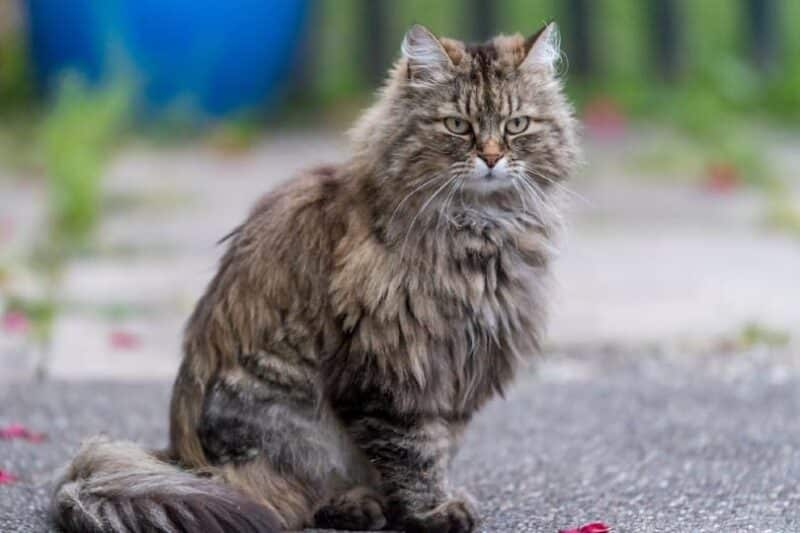

Ładowanie strony...
Nasze ulubione rasy kotów
Oto krótki opis kilku naszych ulubionych ras kotów.
Ragamuffin
Ogólny zarys rasy Raggamuffin:
- Pochodzenie: Rasa została stworzona w latach 90. XX wieku poprzez krzyżowanie kotów Ragdoll z innymi rasami, takimi jak perskie czy himalajskie.
- Wygląd: Raggamuffiny są dużymi, mocno zbudowanymi kotami o okrągłych głowach, pełnych policzkach i dużych oczach. Ich sierść jest długa, gęsta i miękka, a najczęściej występują w różnych kolorach i wzorach.
- Temperament: Raggamuffiny są znane z łagodnego i przyjaznego usposobienia. Są to koty towarzyskie, uwielbiają kontakt z ludźmi i często są opisywane jako "kocie psy", ponieważ mogą być bardzo przywiązane do swoich właścicieli.
Dowiedz się więcej o tej rasie!

Maine Coon
Ogólny zarys rasy Maine Coon:
- Pochodzenie: Rasa ta pochodzi z USA, a jej początki sięgają XIX wieku w stanie Maine. Istnieje wiele legend dotyczących jej pochodzenia, ale najbardziej popularna mówi, że koty te powstały z krzyżowania dzikich kotów z domowymi.
- Wygląd: Maine Coony są dużymi kotami o mocnej budowie. Mają długie, puszyste futro, duże uszy z pędzelkami oraz charakterystyczne, wyraziste oczy. Ich ogon jest długi i puszysty, co pomaga im w utrzymaniu równowagi.
- Temperament: Maine Coony są znane ze swojego łagodnego i przyjacielskiego usposobienia. Są to koty inteligentne, towarzyskie i często bardzo lojalne wobec swoich właścicieli.
Dowiedz się więcej o tej rasie!

Sphynx
Ogólny zarys rasy Sphynx:
- Pochodzenie: Sphynx powstał w latach 60. XX wieku w Kanadzie, kiedy to urodził się nagi kot w miocie. Rasa została rozwinięta poprzez krzyżowanie z innymi rasami, w tym Devon Rex.
- Wygląd: Sphynx ma charakterystyczną, pozbawioną sierści skórę, która jest ciepła w dotyku. Ich duże, wyraziste uszy nadają im wyjątkowy wygląd. Sphynx mają także muskularną budowę ciała i wyraźnie zarysowane rysy twarzy.
- Temperament: Sphynx to koty bardzo towarzyskie, pełne energii i ciekawskie. Uwielbiają interakcję z ludźmi i często są opisywane jako "psie koty", ponieważ są bardzo przywiązane do swoich właścicieli.
Dowiedz się więcej o tej rasie!

Kot orientalny
Ogólny zarys rasy Kot orientalny:
- Pochodzenie: Rasa ta ma swoje korzenie w Tajlandii (dawniej Syjamie) i powstała w latach 60. XX wieku w Wielkiej Brytanii, kiedy hodowcy zaczęli krzyżować koty syjamskie z innymi rasami, aby uzyskać różnorodność kolorów i wzorów.
- Wygląd: Koty orientalne mają smukłą, elegancką sylwetkę, długie nogi i duże, spiczaste uszy. Ich oczy są wyraziste, często w kształcie migdałów, a sierść jest krótka, gładka i przylegająca do ciała. Występują w wielu kolorach i wzorach.
- Temperament: Koty orientalne są znane ze swojej żywiołowości, inteligencji i towarzyskości. Są bardzo przywiązane do swoich właścicieli i potrafią nawiązać silne więzi z ludźmi.
Dowiedz się więcej o tej rasie!

Angora turecka
Ogólny zarys rasy Angora turecka:
- Pochodzenie: Rasa ta pochodzi z Ankary (dawniej Angora) w Turcji. Angora turecka była ceniona przez królów i arystokrację przez wieki, a jej historia sięga co najmniej XVII wieku.
- Wygląd: Angora turecka ma długie, jedwabiste futro, które występuje w różnych kolorach, choć najczęściej spotykane są osobniki białe. Mają smukłą sylwetkę, długie nogi i duże, spiczaste uszy, które są często zakończone pędzelkami.
- Temperament: Koty angorskie są znane z tego, że są towarzyskie, aktywne i pełne energii. Są bardzo przywiązane do swoich właścicieli i potrafią nawiązać silne więzi z ludźmi.
Dowiedz się więcej o tej rasie!

Dlaczego lubimy koty?
Powody:
- Są mięciutkie.
- Są słodziutkie.
- Są fajniutkie.
- Mruczą.
- Pozytywnie wpływają na samopoczucie.